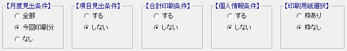

目 次
月度を指定して賃金台帳を印刷する
① 印刷する年月を指定する

ここに印刷したい年月を指定できます。（一般的な賃金台帳とは異なり終了年月も指定することができます。）
「この期間で合計も印刷する」欄にチェックを付けることで、期間内の合計が分かります。
② 用紙に印刷する情報を指定する
{kind=link}
月度見出条件
『全部』 「賃金計算期間」欄に、1 月～12 月までの全ての年月が印字されます。
『今回印刷分』 「賃金計算期間」欄に、【今回の印刷年月】で指定した年月のみ印字されます。
『なし』 「賃金計算期間」欄は全く印字されません。既に印字されている帳票上に印刷する場合に使用できます。
項目見出条件
支給と控除の任意項目の名称の印字有無を指定します。
合計印刷条件
合計欄の印字有無を指定します。
「この期間で合計も印刷する」欄にチェックが付いていても、ここでしないにすると印刷されません。
個人情報条件
データ表の欄外に印字される、個人の氏名・住所・生年月日・扶養家族などの情報の印字有無を指定します。
印刷用紙選択
用紙に表の枠や罫線の印字有無を指定します。
「枠なし」の場合は文字の部分も印刷されません。
③ 用紙を選択する
一般的な賃金台帳と同じです。
④ 給与と賞与の支給日を合わせて印刷したい場合
{kind=link}
以下の条件の場合の設定方法について説明します。
＜給与＞
・末締め
・翌月（１０日）払い
・当月表示
＜賞与＞
・当月（２０日）払い
＜共通＞
・１月から印刷
｜ポイント｜
｜例題｜
Q：令和４年１月から印刷する場合
A：
令和４年１月は令和４年２月１０日支給日となりますので、
【給与明細印刷方法】を１２月にすることで、令和４年１月１０日の支給日分が１月に印刷されます。
賞与は令和４年１月に令和４年１月２０日支給分なので、【賞与明細印刷方法】を１月にすることで、令和４年１月２０日の支給分が１月に印刷されます。
これで、１月１０日支給の給与と２０日支給の賞与が、１月に印刷されます。
⑤ 年度の途中で給与項目が変更された場合
{kind=link}
年度の途中で給与項目が変更となった場合の、項目名の印刷について説明します。
｜ポイント｜
基本は一般的な賃金台帳と同じですが、「項目名称が異なる月がある場合、ページを変える」欄の機能はありません。
{kind=link}
{kind=link}
{kind=link}
{kind=link}
{kind=link}
{kind=link}
月度を指定した賃金台帳について解説します。
一般的な賃金台帳と異なり、印刷する賃金データの月度範囲や、見出文字の印刷指定など、印刷条件を細かく指定して印刷することができます。
｜ポイント｜
印刷したい年月を指定したり、印刷済み用紙に印刷したりできます。